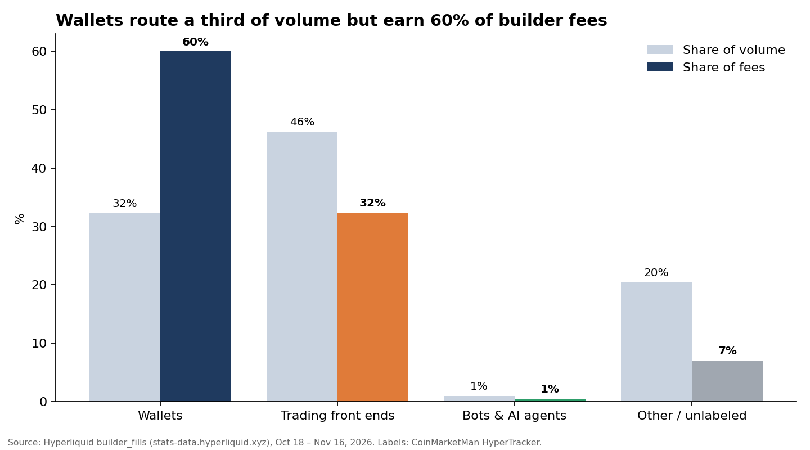
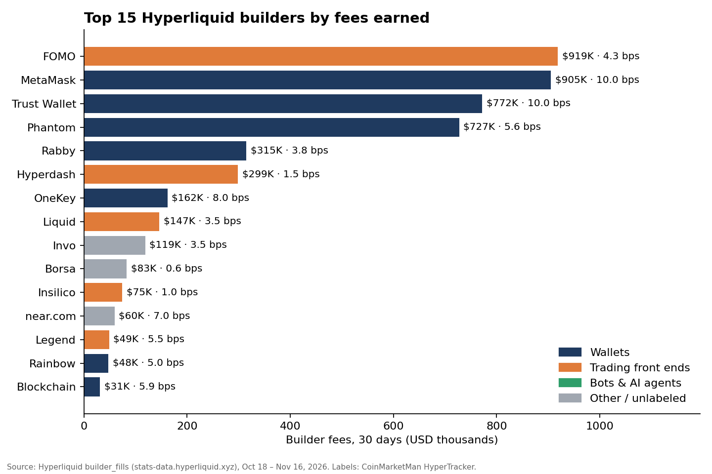
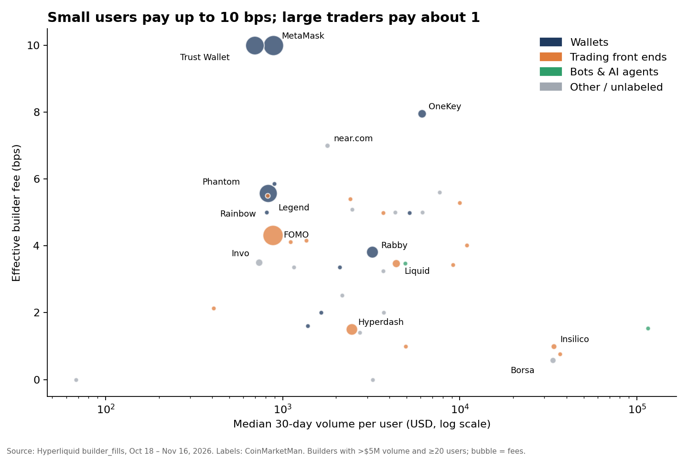
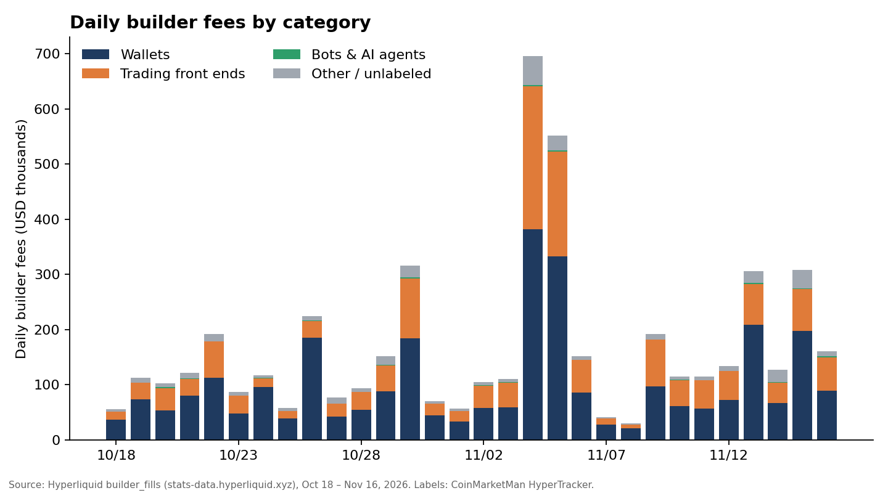

Capital & distribution
Who Earns Hyperliquid’s Builder Fees? 30 Days of On-Chain Data from 98 Apps
Wallets earned 60% of the builder fees on 32% of the volume. A look at which apps earn the fees, what their traders pay, and how their business models differ.
Why builder fees matter
In an earlier note I looked at who brings traders to Hyperliquid through referral codes. Referrals answer one question: who got the user to sign up. Builder codes answer a different one: who earns money each time that user trades.
A builder code lets an app add its own fee to every order it sends on a user’s behalf. The user approves a maximum fee for each builder once, with their main wallet, and can revoke it later. Hyperliquid caps builder fees at 0.1% on perps and 1% on spot, and each user can have up to 10 active approvals. Every fill that carries a builder code is published by Hyperliquid as a daily file per builder, which makes this one of the few app-level revenue numbers in crypto that anyone can recompute.
How we measured
I downloaded Hyperliquid’s public builder_fills files for 128 builder addresses over 30 days, from October 18 to November 16, 2026 (UTC). That is 3,840 address-day files. 1,233 of them did not exist, which means no fills that day; none failed to download. For each fill I computed notional volume as price × size and summed the builder_fee field.
Builder addresses are not named on-chain. I used the labels from CoinMarketMan’s HyperTracker builders page and merged addresses that share a product name: MetaMask, FOMO, Pear Protocol and Okto each have two. That leaves 124 named builders, 98 of which traded in the window. I then grouped the builders into wallets, trading front ends, and bots and AI agents. 53 active builders, with 20% of the volume, remain uncategorized.
Wallets earn most of the fees


The 14 wallets in the sample routed $4.27B of volume and earned $2.99M, an effective rate of 7.0 bps. The 19 trading front ends routed more volume, $6.12B, but earned $1.61M, an effective rate of 2.6 bps.
The gap comes from the fee each app sets. Eight builders charged the full 10 bps, including MetaMask and Trust Wallet. Together they handled 12.7% of the volume and collected 33.7% of the fees.


FOMO ranks first with $919K, but it gets there differently. It routed $2.13B of volume, more than any other builder, at 4.3 bps. MetaMask earned almost as much, $905K, on less than half the volume. Hyperdash routed nearly as much as FOMO, $1.98B, and earned a third as much at 1.5 bps.
Concentration is high. The top four builders earned 66.7% of all fees, and the top ten earned 89.2%.
Small traders pay the most


The apps with the highest fees serve the smallest traders. The median MetaMask user traded $882 in 30 days and paid 10 bps; the median Trust Wallet user traded $695. On Insilico the median user traded about $34,000 and paid 1 bp; on Tread.Fi about $37,000 at 0.76 bps.
At the far end, Borsa had 23 users. They traded $1.44B in 30 days at 0.58 bps, about $3,600 in fees per user. Invo had 24,483 users, more than any builder except Phantom, and earned about $5 per user.
This mirrors what the referral data showed. Invo had referred about 100,000 users, of whom one held at least $10,000. Phantom referred the most users and had one of the lowest rates of large accounts. Wallets and consumer apps bring many small traders. Those traders tend to pay the highest rates, and professional terminals compete on price for the large ones.
Bots and AI agents are still small
The 12 bot and AI agent apps I could identify earned $25,000 in 30 days. Moonbot led with $16,500 from 157 users. WunderTrading, which offers its Premium plan free to Hyperliquid traders in exchange for a 0.035% builder fee, earned $5,200 from 387 users. Its effective rate in the data was 3.47 bps, which matches the fee it advertises.
Two caveats apply. Not every automated product uses a builder code: Bitsgap and 3Commas, which both support Hyperliquid, do not appear in the labeled list. And many bots connect through an exchange API without a builder code. So this measures bot activity that pays a builder fee, not all automated trading on Hyperliquid.
Volume moves together


Daily fees averaged $166,000. The busiest day, November 4, brought in $696,000, about four times the average. FOMO, Trust Wallet, Phantom and MetaMask all rose together that day, which points to a market-wide move rather than any one app. That was the day Democrats won both houses of Congress in the US midterms, according to Reuters, and the market was still absorbing the roughly $6.3B theft from Binance days earlier. Bitcoin fell to about $75,600, then a short squeeze and a rebound in US stocks pushed it back above $80,000, with heavy liquidations along the way.
One more pattern stood out. For Liquid, Insilico, Tread.Fi and Trasia, HIP-3 equity perps such as SP500, NVDA, MU and SNDK were among the three largest markets by volume. I only kept each builder’s top markets, so I cannot give a share, but stock perps are already a core product for some front ends.
What this means for traders and builders
For traders, the fee you pay on Hyperliquid has two parts: the exchange fee and whatever your app adds on top. On the same trade, the difference between a 1 bp app and a 10 bps app is $90 on every $100,000 of volume. You can check the maximum you have approved for any builder with Hyperliquid’s maxBuilderFee info request, using your address and the builder’s address.
For builders, the data shows two businesses that look alike. Wallets earn high fees on small traders they already have. Terminals compete on price for large traders. Only 0.6% of sampled addresses used more than one labeled builder in this window. That suggests limited overlap within the sample; it does not show which app a trader used first or how long they stayed.
At AlphaNet, where I work on BD, we run quantitative strategies in users’ own Hyperliquid accounts. AlphaNet does not currently charge a platform fee and is not part of this builder-fee sample. What I take from this data is that distribution on Hyperliquid looks less like a race for signups and more like a question of which traders an app is built for.
Methodology & limits
The sample covers 128 builder addresses labeled by CoinMarketMan HyperTracker, merged into 124 builders, of which 98 traded in the window. Builders without a public label are not included, so the totals are a floor, not Hyperliquid’s full builder market. The labels and my category groupings are not independently verified.
Volume is the notional value of fills that carried a builder code, as reported in each builder’s file. User counts are distinct addresses; one person can control several addresses, and one address can be a bot or a vault. Median user volume is computed per builder over the 30 days. Top markets are the three largest by volume per builder.
Thirty days is a short window. The rankings may shift with market conditions, promotions, or changes to an app’s fee.
Data sources: Hyperliquid builder_fills (stats-data.hyperliquid.xyz/Mainnet/builder_fills), Hyperliquid builder codes documentation, CoinMarketMan HyperTracker builders page.
Disclosure: I work on BD at AlphaNet. These are personal views, not investment advice.